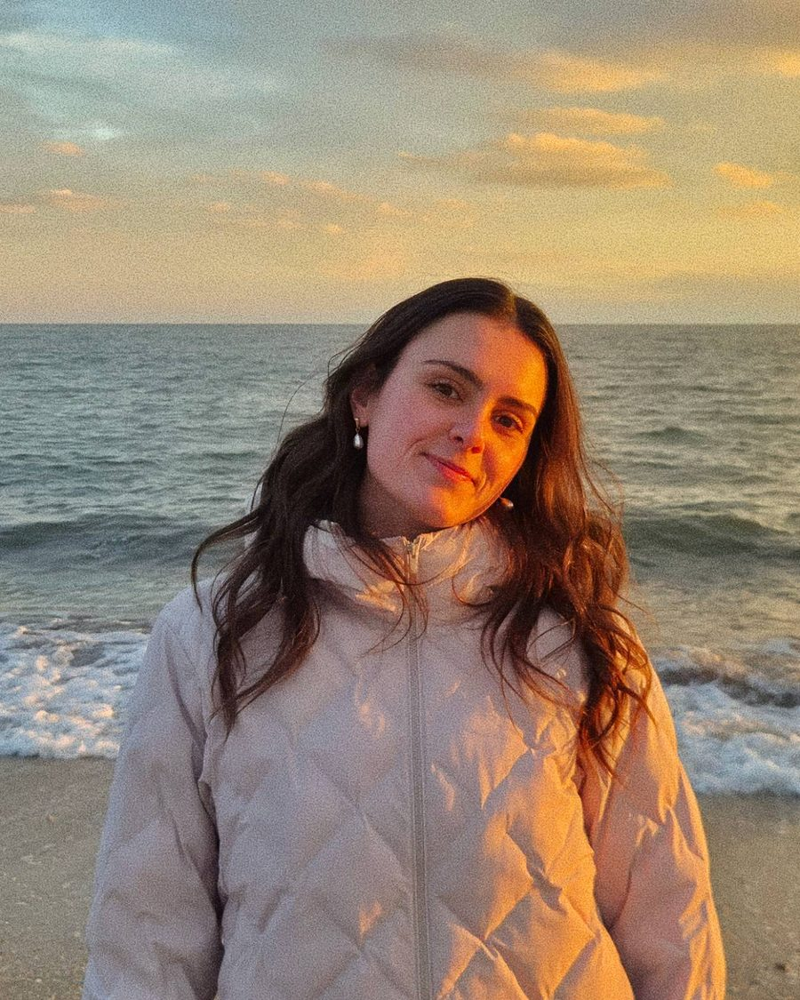

À propos
Je suis Cécile Moinard. Je termine un master en sciences de l'information et de la communication à Audencia SciencesCom.
J'ai fait mes quatre années d'alternance dans le tourisme breton. À l'Office de Tourisme Côte de Granit Rose, je communiquais auprès du grand public : supports print, site web, réseaux sociaux. À Tourisme Bretagne, le comité régional du tourisme, je suis passée à la communication B2B et institutionnelle. Deux publics, deux discours : c'est ce qui m'a appris à adapter mes messages à chaque cible. J'y ai géré Point Comm', la newsletter des professionnels du tourisme breton.
Ce qui me plaît, c'est de rendre une information claire. Choisir l'angle, adapter le ton au public, puis mesurer ce qui fonctionne pour s'améliorer.
Mes deux alternances, au sein d'acteurs publics du tourisme, comme mon mémoire sur la médiation culturelle numérique dans les territoires ruraux, m'ont fait travailler pour et avec des structures publiques. C'est dans cette voie que je souhaite poursuivre : mettre mes compétences au service de l'intérêt général et des publics.
Je cherche donc un poste en CDI ou CDD, en Bretagne et plus largement dans le Grand Ouest, à partir de septembre 2027.
Quand je ne communique pas, je marche sur les sentiers côtiers.